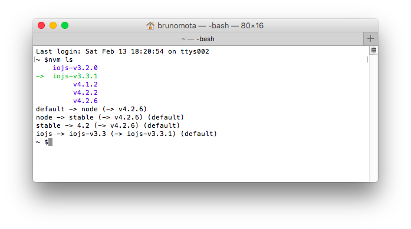

En nuestro desarrollo diario, a menudo nos encontramos con esta situación: tenemos varios proyectos entre manos, cada uno con diferentes requisitos, y por lo tanto, diferentes proyectos deben depender de diferentes versiones del entorno de ejecución de NodeJS. Sin una herramienta adecuada, este problema sería muy difícil de manejar.
nvmSurgió en respuesta a esta necesidad; nvm es una herramienta de gestión de node para Mac, algo similar a rvm para gestionar Ruby. Si necesitas gestionar node en Windows, la recomendación oficial es usarnvmw 或 nvm-windows. Sin embargo, nvm-windows no es un simple port de nvm, y tampoco tienen ninguna relación. Pero todos los comandos presentados a continuación se pueden ejecutar en nvm-windows.
Diferencia entre nvm y n
Hay otra herramienta de gestión de versiones de node, la del gran TJncomando, el comando n existe como un módulo de node, mientras que nvm es un script de shell externo e independiente de node/npm; por lo tanto, el comando n es más limitado en comparación con nvm.
Debido a que las rutas de los módulos instalados por npm son todas/usr/local/lib/node_modules, cuando se usa n para cambiar entre diferentes versiones de node, en realidad se comparte el directorio global de node/npm. Por lo tanto, no puede satisfacer bien la necesidad de “usar diferentes módulos globales de node según las diferentes versiones de node”.
Desinstalar node/npm instalados globalmente
El paquete de instalación de node descargado del sitio web oficial se instalará automáticamente en el directorio global después de ejecutarse. Durante su uso, a menudo te encontrarás con algunosproblemas de permisos, por lo que se recomienda desinstalar node/npm instalados globalmente siguiendo los siguientes métodos.
Primero, abre tu Finder, presionashift+command+G, se abrirá la ventana “Ir a la carpeta”; introduce los siguientes directorios respectivamente y, después de entrar, eliminanode 和 node_moduleslos archivos y carpetas relacionados:
- Abre/usr/local/lib, eliminanode 和 node_moduleslos archivos y carpetas relacionados
- Abre/usr/local/include, eliminanode 和 node_moduleslos archivos y carpetas relacionados
- Si usastebrew install nodepara instalar NodeJS, entonces también necesitas ejecutar en la terminalbrew uninstall nodeel comando para desinstalar
- Revisa bajo tu carpeta personal todos loslocal、libyincludecarpetas, y elimina todos losnode 和 node_modulesarchivos y carpetas relacionados.
- Abre/usr/local/biny eliminanodelos archivos ejecutables
También puede que necesites ingresar algunos comandos adicionales en tu terminal:
sudo rm /usr/local/bin/npm sudo rm /usr/local/share/man/man1/node.1 sudo rm /usr/local/lib/dtrace/node.d sudo rm -rf ~/.npm sudo rm -rf ~/.node-gyp sudo rm /opt/local/bin/node sudo rm /opt/local/include/node sudo rm -rf /opt/local/lib/node_modules
Instalación en Windows
Lo primero y más importante: asegúrate de desinstalar el NodeJS ya instalado, de lo contrario habrá conflictos. Luego descarganvm-windowsel paquete de instalación más reciente e instálalo directamente.
Instalación en OS X/Linux
A diferencia de Windows, no es necesario desinstalar primero el NodeJS existente. Por supuesto, recomendamos desinstalarlo primero de todos modos. Además, necesitarás un compilador de C++. En las distribuciones de Linux normalmente no hay que preocuparse; por ejemplo, Ubuntu puede usar directamentebuild-essentialel paquete; en OS X, puedes usar lasX-Codeherramientas de línea de comandos. Ejecuta este comando:
xcode-select --install
En Linux: (si es una distribución Debian)
sudo apt-get install build-essential
Luego podemos usar
curl -o- https://raw.githubusercontent.com/creationix/nvm/v0.33.0/install.sh | bash
o
wget -qO- https://raw.githubusercontent.com/creationix/nvm/v0.33.0/install.sh | bash
para descargar desde remotoinstall.shel script y ejecutarlo. Ten en cuenta que este número de año de versiónv0.33.0cambiará con el desarrollo del proyecto. En cualquier momento, es beneficiosoconsultar el comando oficial de instalación más recientepara comprobar la versión de instalación más nueva.
Instalar múltiples versiones de node/npm
Por ejemplo, si queremos instalar la versión 4.2.2, podemos usar el siguiente comando:
nvm install 4.2.2
nvm sigue lasreglas de versionado semántico.Por ejemplo, si quieres instalar la última4.2versión de la serie, puedes ejecutar:
nvm install 4.2
nvm buscará4.2.xla versión más alta entre todas para instalarla.
Puedes listar todas las versiones disponibles en el servidor remoto con el siguiente comando:
nvm ls-remote
Para Windows, es:
nvm ls available
Cambiar entre diferentes versiones
Cada vez que instalamos una nueva versión de Node, el entorno global establece automáticamente esta nueva versión como predeterminada.
nvm proporciona elnvm usecomando. El uso de este comando es similar alinstallcomando.
Por ejemplo, cambia a4.2.2：
nvm use 4.2.2
Cambia a la última versión de4.2.x：
nvm use 4.2
Cambia a iojs:
nvm use iojs-v3.2.0
Cambia a la última versión:
nvm use node
Cada vez que se ejecuta un cambio, el sistema enlaza el ejecutable de node a los archivos de la versión específica.
También podemos usar nvm para establecer alias a diferentes números de versión:
nvm alias awesome-version 4.2.2
Le damos a4.2.2este número de versión un nombre llamadoawesome-version, y luego podemos ejecutar:
nvm use awesome-version
El siguiente comando puede cancelar el alias:
nvm unalias awesome-version
Además, también puedes establecerdefaulteste alias especial:
nvm alias default node
Listar las instancias instaladas
nvm ls

La flecha verde de arriba es la versión actualmente en uso; abajo también se enumeran los alias que se han establecido.
Usar diferentes versiones de Node en un proyecto
Podemos, creando en el directorio del proyecto un.nvmrcarchivo para especificar la versión de Node a usar. Después, en el directorio del proyecto, ejecutanvm usey listo..nvmrcEl contenido del archivo solo necesita seguir las reglas de versionado semántico mencionadas anteriormente. Además, hay una herramienta llamadaavn, que puede automatizar este proceso.
En múltiples entornos, ¿cómo se debe usar npm?
Cada versión de Node viene con una versión diferente de npm; puedes usarnpm -vpara ver la versión de npm. Los paquetes npm instalados globalmente no se comparten entre diferentes entornos de Node, porque esto causaría problemas de compatibilidad. Se colocan en directorios de diferentes versiones, por ejemplo,~/.nvm/versions/node/<version>/lib/node_modules</version>directorios como estos. Esto también nos ahorra, en Linux, tener que usarsudodicho comando. Debido a que esta es la carpeta personal del usuario, no causará problemas de permisos.
Pero aquí está el problema: ¿tenemos que reinstalar todos los paquetes npm que ya hemos instalado? Afortunadamente, tenemos una manera de resolver nuestro problema. Ejecuta el siguiente comando para importar desde una versión específica a la nueva versión de Node que vamos a instalar:
nvm install v5.0.0 --reinstall-packages-from=4.2
Otros comandos
Ejecutar directamente una versión específica de Node
nvm run 4.2.2 --version
Ejecutar una versión específica de Node en el subproceso de la terminal actual
nvm exec 4.2.2 node --version
Confirmar la ruta de una versión específica de Node
nvm which 4.2.2
Instalar otras implementaciones de Node, como iojs (una implementación de Node basada en ES6, que ahora se ha fusionado con Node).
nvm install iojs-v3.2.0
Comandos rápidos:
- nvm install nodeInstalar la última versión de Node
- nvm install iojsInstalar la última versión de iojs
- nvm install unstableInstalar la última versión inestable de Node
Enlace original: http://bubkoo.com/2017/01/08/quick-tip-multiple-versions-node-nvm/